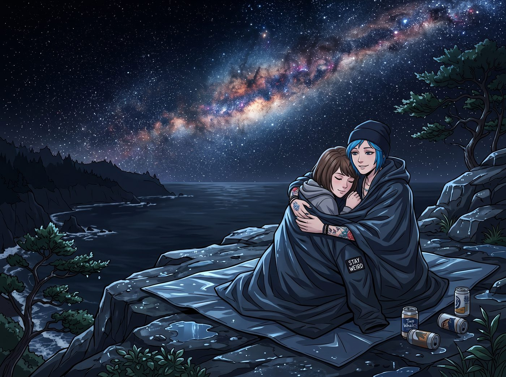

共生熱量交換

夜幕降臨，暴雨洗刷過的奧林匹亞半島，星空清晰得令人窒息。銀河像一條發光的碎鑽緞帶，橫跨在黑天鵝絨般的天際。
Max 和 Chloe 依然坐在懸崖邊那塊防水墊上。氣溫已經降到十度以下，Chloe 把自己那件寬大的防水外套脫下來，將兩個人像包壽司一樣緊緊裹在一起。空啤酒罐倒在一旁，四周除了海浪聲，萬籟俱寂。
一、第三條路
「Max……」Chloe 仰著頭望著滿天星斗，平日那種囂張和玩世不恭褪去了，語氣裡透著罕見的輕柔，「妳說，照那些見鬼的宿命論和蝴蝶效應，我們現在是不是根本不該坐在這裡？」
Max 靠在她肩上，聽著她沉穩的心跳：「妳還在想那個二選一嗎？」
「偶爾會。」Chloe 嘆了口氣，下巴輕輕蹭著 Max 的頭髮，「自從那天妳的照片讓我看到了那些時間線……在那個被強加的命運裡，妳要嘛眼睜睜看著我倒在廁所地板上，要嘛看著阿卡迪亞灣被龍捲風撕成碎片。好像這個世界就是見不得我們兩個同時好好活著。」
她轉過頭，在星光下看著 Max，那雙藍色的眼睛裡閃著無比真誠的光：
「但看看我們現在。小鎮還在，我也還在。我們甚至還收編了一個尖酸刻薄的千金大小姐、一個想給掃地機器人受洗的天使，還有一個能把官僚系統當提款機的十九歲行政魔鬼。」
Chloe 笑了，那是一個真正釋懷、充滿生命力的笑容：「Max，我們作弊了。我們撕了那道選擇題，硬生生砸出了第三條路。雖然現在全世界都在封城，我們還得替實習生去泥地裡拆鐵箱子……但我他媽的愛死這條時間線了。」
Max 的眼眶微微發熱。她從外套裡伸出手，與 Chloe 十指緊扣。
「我也是。」Max 輕聲說，「我們不用再做選擇了。」
二、物理上的極限
那一刻，星空、海浪、雨後的松香，所有的氣氛都烘托到了頂點。
Chloe 低下頭，Max 仰起臉。她們接了一個漫長、溫柔、深不見底的吻。那個吻裡沒有急躁，只有失而復得的珍視，和跨越了無數次時間回溯之後，終於確認彼此就在身邊的安心。
然後，一陣海風吹過。
Max 打了一個響亮的噴嚏。
兩人對視了一眼，同時笑了出來。現實殘酷地擺在面前：氣溫還在往下掉，她們剛在暴雨裡走了三英里，渾身是汗味和泥味，Max 那雙羊絨靴上的泥巴已經乾成了硬殼，Chloe 的手上還沾著拆機器留下的鐵鏽。
「要是在這種地方脫衣服，」Chloe 吸了吸鼻子，「明天實習生大概會把我們以失溫事故的名義申報非戰鬥減員。」
「閉嘴。」Max 笑著把臉埋進她的頸窩，把外套拉得更緊。
那一晚，她們就這樣緊緊依偎著，分享著同一件外套的溫度，聽著彼此的呼吸，在星空下沉沉睡去。
三、社會性死亡的早晨
第二天清晨，兩個渾身乾泥、頭髮像鳥巢的傢伙，互相攙扶著一步一滑地走回二號車廂。
門一打開，Victoria 穿著真絲晨袍，端著一杯剛做好的 Espresso，用一種「我到底造了什麼孽要看這個」的眼神上下打量著她們。
「噢，看看是誰回來了。」Victoria 挑起那道精心修剪的眉毛，目光在兩人緊牽的手和凌亂的衣衫上來回掃視，「拆一個破鐵箱子需要拆一整個晚上？還是說，妳們兩隻野生動物終於按捺不住，在泥坑裡完成了什麼原生態的儀式？」
「Victoria！」Max 的臉唰地紅到了脖子根，「我們只是……天黑了下不了山，在懸崖邊……不小心睡著了！」
Kate 從廚房探出頭，臉頰也紅撲撲的，眼神游移，根本不敢直視她們，手裡捧著兩條乾淨的浴巾：「那個……我幫妳們把熱水器調到最高了……妳們一定……累壞了吧？快去洗個熱水澡……記得要洗乾淨哦。」
Kate 這種明明很純潔卻強行腦補了什麼的嬌羞反應，讓 Max 更加百口莫辯。
四、官方定調
「根據客觀數據，兩位學姐昨晚並未發生任何超出取暖需要的肢體活動。」
工作站後方，傳來 Lily 那萬年不變的軟糯聲音。車廂裡瞬間安靜了，所有人都轉頭看她。
Lily 推了推眼鏡，把筆記本電腦的螢幕轉向眾人。畫面上是一張熱成像圖：兩個紅色的人形熱源在懸崖邊緊緊重疊，四周是一片代表低溫的深藍。
「昨晚九點，我發現兩位學姐的手機訊號停在懸崖邊不再移動，而當地夜間氣溫預報會降到攝氏五度。」Lily 的語氣平靜得像在唸財報，「考慮到兩位衣物濕透、又沒有攜帶睡袋，存在失溫風險，所以我放了一台民用熱成像無人機在上空待命，萬一體溫曲線異常，就立刻呼叫救援。」
她頓了頓：「數據顯示，妳們兩人的體表溫度交匯面積達到百分之八十五，並維持了九個小時的靜止狀態。在熱力學上，這叫作防禦性共生熱量交換。簡單來說，她們只是像兩隻抱團取暖的企鵝一樣，在懸崖邊睡了一覺。所以 Victoria 學姐，您的假設不成立。」
車廂裡陷入了長達十秒的死寂。
Victoria 差點被咖啡嗆到：「妳盯著她們睡了一整晚？！」
「我盯的是體溫曲線，學姐。」Lily 認真地糾正，「如果她們失溫，我需要在二十分鐘內決定是否叫直升機。這是風險管理，不是偷窺。」
Kate 捂著通紅的臉小聲說了句「主啊原諒我們」，直接躲回了廚房。Max 絕望地捂住臉——在這節車廂裡，妳的每一個浪漫舉動，都會被某個人量化成熱力學數據。
五、企鵝伴侶
「哈哈哈哈哈！」只有 Chloe 爆發出了喪心病狂的狂笑。她一把摟住已經社會性死亡的 Max，對著 Victoria 和 Lily 囂張地挑釁：
「聽到了嗎，大小姐？官方認證的共生熱量交換！不過實習生，妳那台無人機肯定沒拍到，我們交換熱量的時候有多投入！」
她故意在 Max 的臉頰上重重親了一口，看著 Victoria 露出作嘔的表情，笑得更加肆無忌憚：「走吧，企鵝伴侶，我們去洗那個『累壞了』的熱水澡！」
Max 被 Chloe 半拖半抱地拉向浴室，臉紅得發燙，嘴角卻忍不住揚了起來。
那些舊時間線留下的傷口，或許永遠不會完全癒合，某個停電的夜晚、某道刺眼的紅光，依然可能把她們拉回那片黑暗。但在這節吵吵鬧鬧、毫無隱私、卻永遠有人在半夜盯著妳體溫曲線的車廂裡，她們知道，不管被拉回去多少次，總會有人把她們接回來。